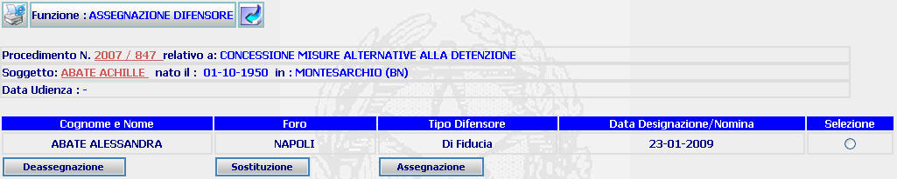

GENERALITA'
ASSEGNAZIONE DIFENSORE: La funzione consente di assegnare/sostituire/deassegnare un avvocato al fascicolo SIUS.
LE MASCHERE VIDEO
La funzione in esame viene realizzata attraverso l'utilizzo della seguente maschera; l'intestazione della stessa contiene dati relativi a estremi del procedimento Sius, il nome e cognome del soggetto, la data di udienza se fissata o prefissata.

COME FARE PER ...
| Per visualizzare il dettaglio del procedimento Sius l'utente deve cliccare sul link relativo all'Anno/Numero del procedimento Sius evidenziato in rosso; |

| Per visualizzare il dettaglio del soggetto l'utente deve cliccare sul link relativo al cognome/nome del soggetto evidenziato in rosso; |

| Per deassegnare un avvocato la cui nomina è stata revocata, l'utente deve selezionare il bottone in corrispondenza del nome dell'avvocato, nella colonna selezione e successivamente cliccare su ; |
| per sostituire l'avvocato assegnato al procedimento SIUS l'utente deve selezionare il bottone in corrispondenza del nome dell'avvocato, nella colonna selezione e successivamente cliccare su ; |
| per assegnare un ulteriore avvocato nominato, l'utente deve cliccare sul bottone. |
BOTTONI
Oltre ai comandi funzionali relativi al menù verticale sono presenti i seguenti comandi:
|
COMANDI |
DESCRIZIONE |
|
|
a fronte di tale comando il sistema deassegna il nome dell'avvocato |
|
|
a fronte di tale comando il sistema sostituisce il nome dell'avvocato memorizzato nel fascicolo con il nuovo nome. |
|
|
a fronte di tale comando il sistema inserisce un ulteriore avvocato nel fascicolo, non sono consentite più di due assegnazioni. |
CONTROLLI
Azionando il bottone di  , il sistema verifica la correttezza dei dati se non riscontrerà
incongruenze verrà assegnato il difensore selezionato
, il sistema verifica la correttezza dei dati se non riscontrerà
incongruenze verrà assegnato il difensore selezionato